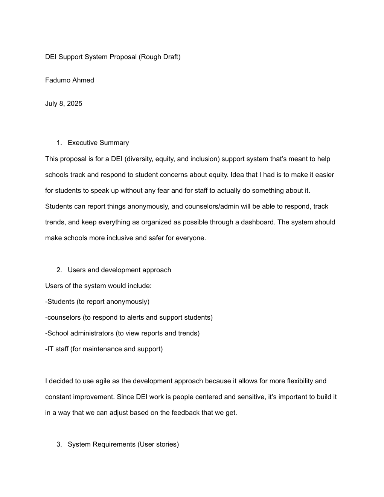
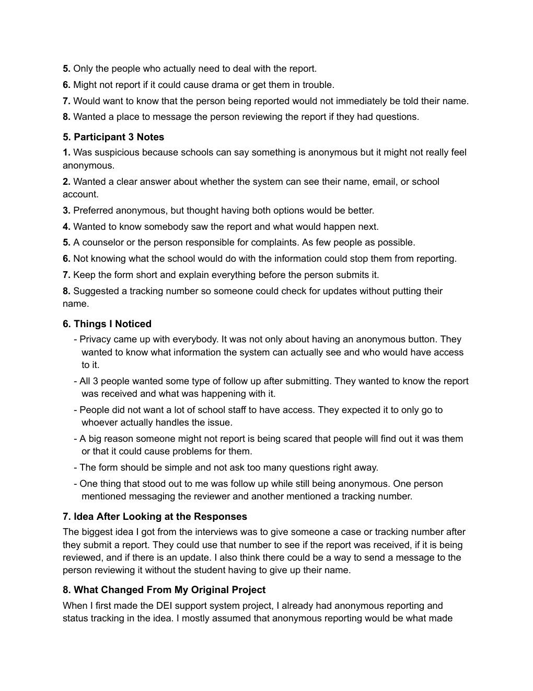

Exploratory UX Research · Independent Extension of an MIS Project
Designing a Safer Student Reporting Experience
I wanted to understand what would make someone trust a reporting system enough to actually use it.
- Participants
- 3 adults
- Questions
- 8 core
- Method
- Semi-structured interviews
Project History
Original MIS academic project
I proposed a digital reporting and support system that would help students raise concerns and appropriate school staff respond, follow up, and notice broader patterns. The concept considered students, counselors, administrators, teachers, and IT, with anonymous reporting, alerts, status updates, trend review, and role-based access.
Stakeholder interviews appeared in the original development plan, but they were not conducted in 2025.
Independent UX research extension
I returned to the concept for a small exploratory study focused on what makes a sensitive reporting process feel trustworthy enough to use.

Growing up, I was an introverted kid, but I was also someone who could make friends with pretty much anyone. Where I struggled was speaking up to adults, especially when something was wrong. I remember feeling like bringing up a problem or saying that someone had done something would somehow get me in trouble too.
That experience stayed with me. When I originally created this system, I wanted students to have another way to ask for help without immediately having to sit across from an adult and explain everything face-to-face.
Revisiting the project through UX research gave me the opportunity to ask a bigger question.
Research question
What would make students feel comfortable using a digital system to report sensitive concerns at school?
Areas I explored: trust, privacy, anonymity, follow-up, and barriers to reporting.
Method
I conducted three short semi-structured interviews with adults reflecting on their experiences and expectations as students. Each participant received the same eight core questions.
The interviews explored trust, anonymity, privacy, follow-up, access to reports, barriers to reporting, and ways the experience could feel safer.
Because this was a small exploratory study, the findings are directional and are not intended to represent all students.
View the 8 interview questions
- Imagine your school had a website or app where students could privately report concerns about unfair treatment, bullying, discrimination, or other uncomfortable situations. What would your first reaction be?
- What would make you trust or not trust a system like that?
- Would you prefer reporting anonymously, with your name, or having both options? Why?
- After submitting something, what information would you want to receive afterward?
- Who would you expect to have access to the report?
- Is there anything about the process that might stop you from submitting a report?
- What would make the reporting process feel easier or safer?
- If you could change or add one feature, what would it be?

Key Findings
Privacy requires transparency
Participants didn’t simply want an anonymous option. They wanted to understand what identifying information the system could access and exactly who could see their report.
I’d want to know who can see it.— P1
Follow-up builds trust
All three participants wanted confirmation that their report had been received and information about what would happen afterward.
I wouldn’t want to report something and then hear nothing.— P2
Fear of identification can prevent reporting
Participants worried about being identified, getting in trouble, creating more conflict, or not knowing how their information would be used.
I’d be scared they could figure out it was me.— P1
Keep reporting simple
Participants preferred a short reporting process with clear explanations rather than a long or complicated form.
Keep the form short and explain everything before I submit it.— P3
Design Opportunities
People want to know whether they can be identified.
Explain exactly what identifying information is collected before submission.
People don’t want their report to disappear after submission.
Provide clear status updates.
People want to follow what happens without revealing their identity.
Give anonymous reporters a unique case or tracking number.
Reporting can feel intimidating or burdensome.
Keep the initial reporting flow short and collect only necessary information.
Someone may have questions after submitting a report.
Explore secure communication with an authorized reviewer while maintaining anonymity.
These are research-informed recommendations—not features that were deployed.
Proposed Experience
A research-informed direction based on the interviews—not a built or usability-tested product.
- 01Submit report
- 02Receive an anonymous case number
- 03Report received
- 04Under review
- 05Update or secure message
- 06Resolution or next steps
What I Learned
My original concept assumed that an anonymous reporting option would make students feel safer. The interviews pushed me to think beyond anonymity itself.
Participants also wanted transparency: What information can the system see? Who can read the report? What happens next? Will I know whether anyone looked at it?
Anonymous follow-up became an important opportunity. One participant suggested a tracking number, while another wanted a way to communicate with the reviewer. That made me think about how students could follow their case and contact an authorized reviewer without giving up their anonymity.